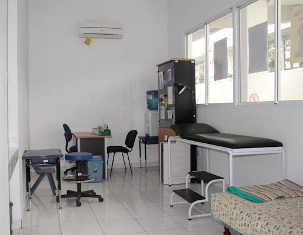

Sekolah dasar
sekolah dasar adalah sekolah yang mengajarkan pendidikan dasar untuk anak-anak berusia 7 sampai 12 tahun.sekolah dasar merupakan kelanjutan dari pra-sekolah dan dilanjutkan oleh sekolah menengah.
VISI
- Terwujudnya peserta didik yang beriman,berprestasi,terampil,mandiri dan berwawasan global
MISI
- menanamkan keimanan dan ketaqwaan melalui pengalaman ajaran agama
- berprestasi dalam semua pelajaran akademiks maupun non akademiks
- mengoptimalkan proses pembelajaran dan bimbingan
- mengembangkan bidang ilmu pengetahuan dan teknologi berdasarkan minat,bakat,dan potensi perserta didik
Tujuan
- siswa dibimbing untuk dapat kejuaraan lomba anak prestasi maupun olympiade sains dan olahraga
- semua kelas melaksanakan pendekatan pembelajaran aktif pada semua mata pelajaran
- mengembangkan budaya sekolah yang religious melalui kegiatan keagaman
- mengembangkan berbagai kegiatan dalam proses belajar di kelas berbasis pendidikan karakter bangsa
- menyelenggarakan berbagai kegiatan social yang menjadi bagian dari pendidikan
- menjalin kerja sama dengan lembaga lain dalam merealisasikan program sekolah
- memanfaatkan dan memelihara fasilitas mendukung proses pembelajaran berlangsung
- terwujudnya akhlak dan perilaku peserta didik yang mulia



sekolah dasar
- Perkembangan Dunia Ilmu Pengetahuan
- demikian siswa dapat memiliki dan menanamkan sikap budi pekerti terhadap sesama
- keterampilan untuk hidup hidup mandiri dan mengikuti pendidikan lebih lanjut
- pendidikan memiliki peran yang sangat untuk masa depan individu dan masyarakat
Prasarana sekolah dasar
| No. |
hari |
Jenis pelajaran |
Banyak Siswa |
| 1 |
senin |
matematika |
30 |
| 2 |
Selasa |
ipa |
32 |
| 3 |
Rabu |
ips |
31 |
| 4 |
Kamis |
bahasa indonesia |
29 |
| 5 |
jumat |
bahasa inggris |
32 |